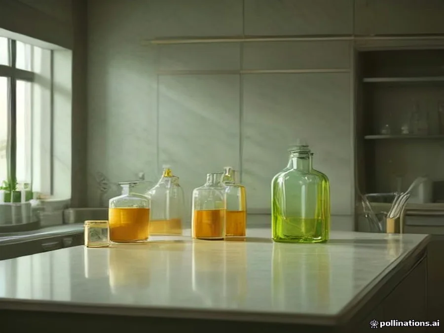

Founder & Chief Scientist
Dr. Maya Lin, M.D.
Clinical Botanical DermatologyPioneering biomimetic lipid carriers that transport cold-pressed herbal actives deep into stratum corneum layers without irritation.
Pure living skincare thoughtfully formulated to deliver essential nourishment and honor the skin's daily natural radiance.
Every formulation that carries the Stackly seal represents a sacred covenant of biocompatibility, certified non-toxic integrity, and unconditional transparency.
100% free from synthetic fragrances, endocrine disruptors, sulfates, parabens, and microplastics.
Formulated at physiological pH (4.8 - 5.5) mirroring your cellular lipid matrix for true dermal affinity.
Leaping Bunny certified, globally cruelty-free. Zero animal testing across every raw ingredient and formulation.
Extracted below 38°C to safeguard delicate phytonutrients, enzymes, and lipid antioxidants from degradation.
Long before Stackly emerged in modern skincare, our foundations took shape in the lush botanical valleys of southern India. We honor age-old Ayurvedic cold-infusion principles while engineering clinically proven dermal solutions for modern barrier health.
Cultivating native centella asiatica, holy basil, and moringa alongside indigenous tribal harvesters in harmony with natural monsoon rhythms.
Merging time-honored plant pharmacopoeia with modern biomimetic lipid carriers to deliver deep cellular nourishment without irritation.
Leading international clean cosmetics with certified traceable harvests, zero-carbon supply chains, and living biodynamic formulations.
We believe you have the absolute right to know every ingredient that touches your skin. We test every single formulation batch through certified third-party laboratories.

Every harvest run and formulation undergoes exhaustive peer-reviewed scientific analysis before leaving our facility:
Full disclosure on every ingredient, sourced ethically without compromise.
Formulas designed to work in harmony with your natural biological rhythms.
Cruelty-free, gentle to your skin barrier, and considerate of our living planet.
True skincare shouldn't be complicated or overwhelming. We believe in daily rituals that ground you—moments to breathe, nourish, and reconnect with nature's pure remedies in the quiet comfort of your home.
Every seed, leaf, and botanical extract is chosen for its proven biocompatibility with human skin. We prioritize regenerative agriculture, ethical wild harvesting, and zero-deforestation methods.
We believe in skinimalism—fewer products formulated with higher concentrations of active botanicals. Our multipurpose formulas reduce vanity waste while giving your skin barrier everything it needs to flourish.
Your skin is constantly evolving with the seasons, stress, and lifestyle. We design biocompatible formulations that support your barrier through natural hormonal cycles, climate shifts, and everyday life.
Our environmental reverence extends far beyond the bathroom shelf. Every Stackly elixir is housed in infinitely recyclable apothecary amber glass, cushioned with post-consumer recycled kraft cartons and non-toxic soy inks. Through our studio refill loop, we invite patrons to return empty vessels for careful sanitization and closed-loop reuse—ensuring pure skincare with zero vanity landfill footprint.
True holistic beauty is inextricably linked to the wellbeing of the agricultural communities and living biomes that nurture our botanical ingredients.
Guaranteed fair-trade living wages, multi-year botanical contracts, and vocational agricultural training for female cultivators.
Solar-powered water purification kiosks constructed across rural farming villages, providing safe daily hydration for over 3,000 households.
Restoring degraded rain catchment corridors and preventing soil erosion through our non-profit 1% For The Earth alliance.
We are creating an entirely new standard where conscious skincare enriches human dermal biology while actively regenerating planetary ecosystems.
Phasing out virgin plastic entirely in favor of compostable mycelium packaging, infinitely recyclable aluminum, and refillable amber glass.
Solar-powered manufacturing, zero-emission logistics, and carbon-capturing regenerative agroforestry that sequesters more carbon than we emit.
Pioneering cellular plant agriculture to reproduce rare, endangered botanical bio-actives in closed-loop bioreactors without foraging wild habitats.
Meet the visionary dermatologists, herbal pharmacologists, and regenerative agriculturalists guiding Stackly's biocompatible formulations.
Pioneering biomimetic lipid carriers that transport cold-pressed herbal actives deep into stratum corneum layers without irritation.
Building equitable fair-wage farming partnerships across Nilgiri valleys, ensuring wildcrafted ingredients preserve biodiversity.
Specializing in gentle sub-zero extraction protocols that safeguard delicate polyphenol antioxidants and enzymatic integrity.
Harmonizing traditional Southern Indian botanical wisdom with regenerative soil composting and organic watershed protection.
Experience the transformative calm of living organic skincare crafted for your barrier.
Explore Formulations